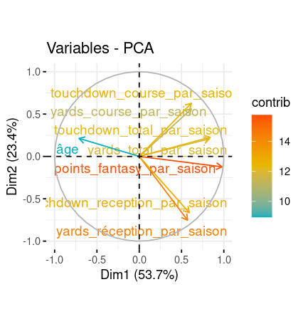
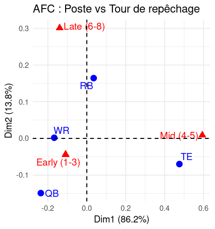
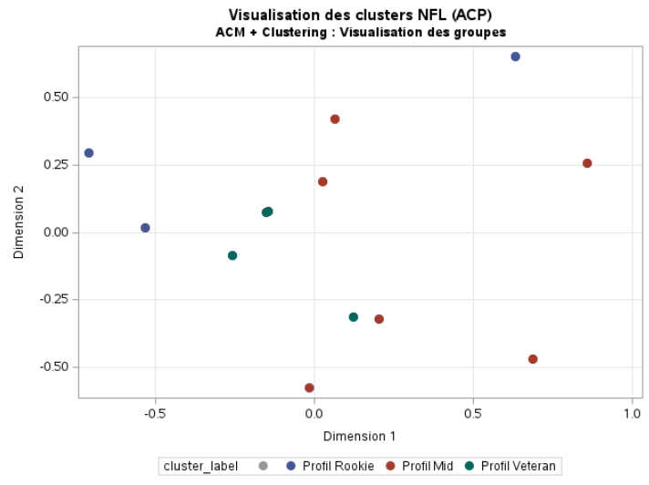

Une modélisation statistique, vue aux semestres 1 et 2, correspond à l'analyse de données. On essaie donc de comprendre ce que les données représentent et on choisit l'outil le plus approprié pour notre étude. Une analyse exploratoire va plus loin : on traite des données multidimensionnelles (plus de 2 dimensions), on cherche des indices et des informations qui peuvent potentiellement identifier des causes aux problèmes détectés par une analyse de données classique.
L’ACP est une méthode statistique utilisée pour résumer et visualiser de grands ensembles de données numériques. Elle transforme les variables initiales en un petit nombre de nouvelles variables (appelées composantes principales) tout en conservant le maximum d’information. C’est très utile pour repérer les tendances, les groupes et les anomalies dans les données.
J'en ai déduit que la première composante(première variable), correspond aux variables points_fantasy, yards_total, et touchdown_total. Ce qui laisse penser en premier lieu que les joueurs performants sont ceux qui accumulent à la fois des yards et des touchdowns, ce qui booste leurs points fantasy. Et la deuxième composante, semble être influencée par les yards qui distinguent les joueurs selon leur style (course ou réception). Par exemple, les RBs(Running Backs) dominent en yards à la course, tandis que les WRs(Wide Receivers) sont excellent en yards à la réception.
L’AFC est utilisée pour analyser des tableaux de données qualitatives (comme des tableaux de contingence). Elle permet de représenter visuellement les relations entre des modalités de deux variables qualitatives. Cela aide à détecter des associations entre catégories et à mieux comprendre la structure des données.
Sur le premier axe(première composante) de notre analyse, on observe une forte proximité entre les Tight Ends (TE) et les joueurs choisis au 4ᵉ ou 5ᵉ tour. Cela s’explique assez bien : les Tight Ends sont des joueurs très polyvalents, capables de participer à la fois à l’attaque et à la défense. Ils sont aussi relativement peu nombreux dans une équipe (seulement 2 à 4 joueurs sur 53), ce qui en fait des profils spécifiques que les recruteurs ciblent à des moments précis de la Draft.
Le deuxième axe met en avant les Running Backs (RB), qui apparaissent proches des choix tardifs. Les Running Backs sont des joueurs spécialisés dans la course. Bien qu’ils soient utiles, ils sont aujourd’hui considérés comme moins déterminants dans un match que d'autres postes, car leur impact a tendance à s’amoindrir avec le temps, notamment en raison du rythme physique intense qu’ils subissent.
Enfin, on remarque que les Wide Receivers (WR) et les Quarterbacks (QB) sont généralement sélectionnés très tôt. Cela reste cohérent avec leur rôle essentiel en attaque : ce sont souvent eux qui marquent les points ou créent les actions décisives. Dans tous les sports, les joueurs offensifs sont très valorisés, et en NFL, c’est encore plus vrai. Les entraîneurs cherchent en permanence des talents prometteurs à ces postes, car ils peuvent changer le cours d’un match.
L’ACM est une extension de l’AFC pour plusieurs variables qualitatives. Elle permet de visualiser la structure des données et de regrouper des individus ayant des caractéristiques similaires. Elle est souvent utilisée pour créer des profils ou des typologies à partir d’enquêtes ou de jeux de données catégorielles.
Les rookies, c’est-à-dire les joueurs débutants, apparaissent généralement dans la partie négative de la première dimension du graphique. Cela signifie qu’ils obtiennent souvent peu de points fantasy en début de carrière, ce qui est cohérent car ils doivent encore s’adapter au haut niveau de la NFL. Cependant, il existe des exceptions. Par exemple, certains rookies comme Garrett Wilson ou C.J. Stroud ont brillé dès leur première saison, ce qui se reflète par un point bleu situé très haut sur le graphique.
Les joueurs du profil mid (milieu de carrière) sont très dispersés sur le graphique. Cela reflète la diversité de leurs trajectoires : certains continuent de progresser, d'autres régressent. En général, leurs performances se situent entre 100 et 300 points fantasy par saison.
Le profil veteran (joueurs expérimentés) est beaucoup moins dispersé. Ces joueurs ont des performances plus régulières et atteignent souvent plus de 200 points fantasy par saison, même pour les postes défensifs. On distingue deux grandes catégories : les joueurs qui ont su maintenir un haut niveau au fil des années, et ceux dont les performances ont diminué avec le temps (blessures, âge...).
On remarque également que les postes de quarterback (QB) et wide receiver (WR) sont majoritairement représentés dans les profils mid et veteran. Ce sont des postes offensifs essentiels qui rapportent beaucoup de points, ce qui explique pourquoi ces joueurs sont souvent au cœur des stratégies d’équipe.
Cette analyse complète les observations précédentes sur la Draft NFL. Elle montre comment l’expérience et le poste influencent la performance d’un joueur sur plusieurs saisons. Elle met également en valeur ma capacité à utiliser une méthode statistique avancée pour restituer des résultats de façon claire et compréhensible, ce qui répond pleinement à la compétence "Restituer et argumenter les résultats".
Ces 3 analyses nous montrent que les performances des joueurs, évaluées par les yards, touchdowns et points fantasy, influencent fortement les choix de repêchage. Les quarterbacks et Wide Receivers sont les plus prisés, souvent choisis tôt (tours 1-3), en raison de leur impact offensif. Les Tigh Ends sont généralement sélectionnés aux tours intermédiaires (4-5), tandis que les running backs sont plus souvent recrutés tardivement (6-8). Les rookies ont des performances variées, mais les vétérans affichent des points fantasy plus variés.
Cette analyse m’a permis de développer une vision plus critique de l’usage des méthodes factorielles. Bien que les résultats graphiques soient utiles pour repérer des tendances, ils nécessitent toujours un recul analytique. Les représentations peuvent parfois simplifier la réalité ou masquer certaines nuances importantes. Par exemple, si l'on observe des regroupements clairs sur les graphiques, cela ne signifie pas nécessairement une vérité absolue : des exceptions existent, comme certains rookies très performants dès leur première saison, ou des vétérans en perte de vitesse.